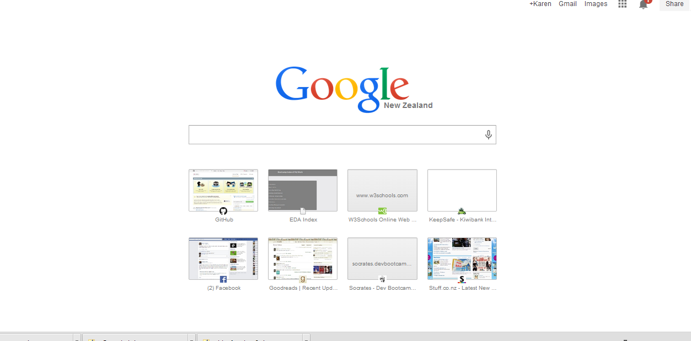
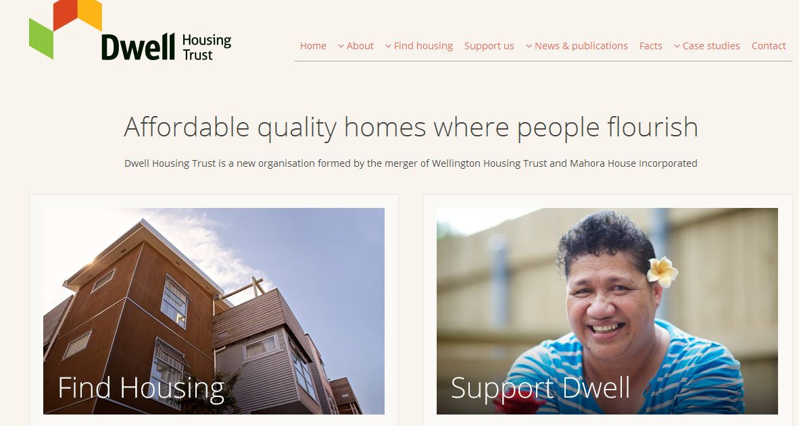
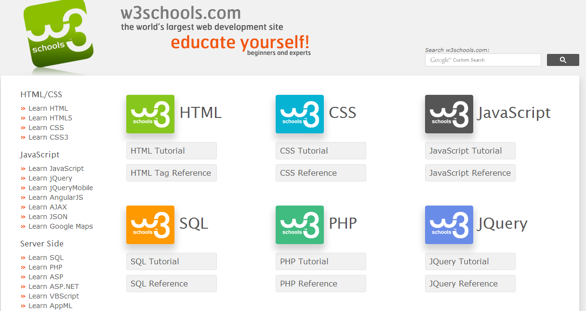

Google!
This is my most frequently used web site. I haven't investigated the statistics but it is probably the world's most frequently used site. It also a favourite of mine because of it's sheer simplicity. It is the ultimate is function over form. In spite of it's popularity it has managed to resist the introduction of advertising and remains completely uncluttered. The eye is drawn to the function area of the site. This is the primary purpose of the site and is front and centre. The site is clear, simple, uncluttered and functional. There is one dominant purpose to the web site and so it has the luxury of being able to strip away all superflous content. It is quick to load and efficient. The visual presentation and the purpose of the web site converge so that the adjectives for it's appearance and it's purpose are very consistent. The sheer simplicity of design and function makes the navigation around the site very straight forward for all users. It is important for the company to make the site ultra easy so that even the most inexperienced user can use the functionality without experience or instruction.

Dwell Housing Trust
I like this web site because it is very clear, simple and uncluttered. It is efficient, visually appealing and easy to navigate. It presents good content in a very readible way. The eye is firstly drawn to the positive images displayed on the home page. The branding is clear and the central message of the organisation is immediately clear to the new arrival to the site. The web site is crisp, subtle, happy and clean. The web site is designed to present an online image for the non-profit organisation, it contains information for various stakeholders and the general public. As well as the usual contact information for the general public, it contains some information for it's client group and others interested in the community housing area. The content is informative, clear, well ordered and simple. These are quite similar adjectives to those that I used to describe the site's visual appearance. The site is relatively easy to navigate, maybe a little clunky. It is easy to access all the content from the home page and then navigate back when finished. There is a reasonable amount of scrolling involved in navigation. The content is interesting and does not tire the viewer. The site is for a not-for-profit organisation and does not contain advertising, although there is clear information indicating how to donate to the organisation.

w3schools http://www.w3schools.com/
This is a web site that offers information and instruction for web developers. As you would expect it is very clearly and thoughtfully presented. It is visually attractive with well layed out with a nice combination of graphics and simple wording. It is cheerful, colourful and again uncluttered considering the amount of information and options presented. The eye drawn to the central functionality. The web site is informational and it's main purpose is to make tutorials and reference information to users seeking this information. The site is practical, easy to navigate, technical, clear and informative. These adjectives are different but complimentary to the visual appearance. Navigation around the site is straight forward. There is quite a lot of scrolling but this is unavoidable with the significant amount of information available, the sidebars and navigation at the top of the screen are very effective. The site is nice and clear and the visitor does not suffer fatigue after being on the site for a period of time. The web site does contain advertising but it is not intrusive. The free instructional content supports and draws in customers for other commercial activities offered by the company.
